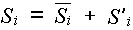
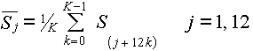
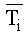
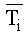
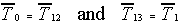
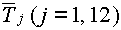
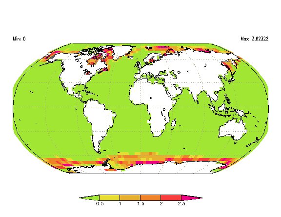
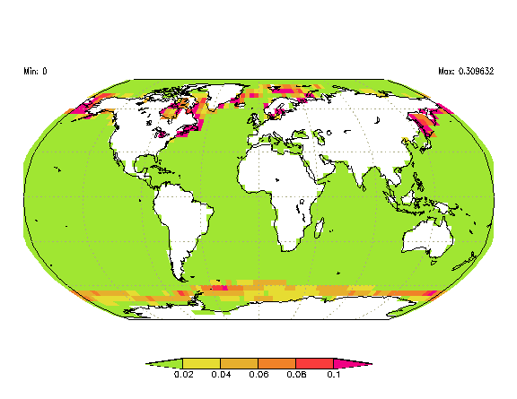

AMIP Sea Surface Temperature and Sea Ice Concentration Boundary Conditions
23 June 1997 (revised: 6 April 2001; 8 January 2008; 22 June 2015)
Karl E. Taylor1, David Williamson2
and Francis Zwiers3
1Program for Climate Model Diagnosis and Intercomparison
2National Center for Atmospheric Research
Climate and Global Dynamics Division
3Canadian Centre for Climate Modelling and Analysis
Atmospheric Environment Service
Table of Contents
Introduction and links to data
Summary
1. Shortcomings of the "traditional" method
2. Construction of the AMIP II boundary conditions
3. Comparison of "traditional" and "new" methods
4. Use of boundary condition data set in AMIP II simulations
5. Boundary conditions for suggested spin-up procedure
Appendix 1: Mathematical details
Appendix 2: Recipe for obtaining and applying the AMIP II boundary condition data sets
Appendix 3: Table of mid-month dates and times
Introduction and links to data
Perhaps the most important boundary conditions for AMIP-style experiments are the prescribed sea surface temperature (SST) and sea ice
concentration (i.e., percentage of area covered by sea ice). Observed monthly mean SSTs and sea ice concentration have been compiled for
the period January 1870 through near present. This data set will be updated periodically (at least every 6 months). These observed monthly
means do not constitute the AMIP II boundary conditions, but the boundary conditions are based on them, as explained in this brief report.
The original AMIP II period extended from January 1979 through February 1996, but simulations need not be strictly limited to this period.
We therefore routinely distribute the observed data for the full period available.
The AMIP SST and sea ice concentration boundary conditions should be specified such that the monthly means computed from the model output precisely
agree with the observations. There are several ways to assure agreement, but if your model relies on linear interpolation between monthly values,
you can make use of the boundary condition data sets created by PCMDI on a 1x1 degree grid and then interpolate these to your own grid.
If you have developed an alternative method to generate daily (or higher frequency) boundary condition data that, when averaged over the month, preserves the
monthly mean, then it may be appropriate to apply your method to the observed monthly mean SSTs and sea ice concentration data sets.
Both the monthly mean observations and the mid-month "boundary condition" datasets are available from PCMDI.
The rest of this report contains a more complete description and justification for the procedure recommended here to prepare and use the AMIP II boundary
condition data sets. A slightly revised version of this report is part of a series of PCMDI reports and can be cited as follows:
Taylor, K.E., D. Williamson, and F. Zwiers, 2000: The sea surface temperature and sea-ice concentration boundary conditions for AMIP II simulations,
PCMDI Report No. 60, Program for Climate Model Diagnosis and Intercomparison, Lawrence Livermore National Laboratory, Livermore, California, 25 pp.
A printable copy of this report is available as a PDF file.
NOTE: The following description is somewhat out of date, but provides an accurate summary of how boundary conditions were prepared until about 2003.
The main difference now is that before 2003, we offered a service to regrid the SST and sea ice data to any target grid specified by users. Resource
constraints prevent us from continuing that service, so the user is tasked with regridding the 1x1 degree gridded data even though this only approximately
preserves the observed monthly means (see discussion below).
Summary
In the initial AMIP simulations (before AMIP II) the observed monthly mean SSTs were specified for the middle of each month, and in most models
daily SSTs were obtained by linearly interpolating between these monthly mean values. This is the traditional method for prescribing SSTs in GCM
simulations, and we shall refer to it as such. Under this procedure much of the SST variance on sub-monthly time-scales is filtered out. Perhaps
less obvious is the fact that the amplitudes of seasonal and interannual variations in SSTs are also damped under this "traditional" procedure.
In fact the monthly mean SST computed from the linearly interpolated time-series will differ in general from the monthly means from which it was derived.
(Consider, for example, the warmest month of the year. In order to recover the monthly mean value, the maximum temperature in the month must exceed
the mean, but this is clearly impossible if temperatures are linearly interpolated between monthly mean values.)
In AMIP II the SST and sea ice concentration should be prescribed in such a way that the correct (observed) monthly means are recovered. Clearly,
a number of different procedures can be devised to satisfy this constraint. Harzallah and Sadourny (J. Clim., 8, 474-495), for example, have
interpolated monthly mean data to daily values by an iterative cubic spline method that preserves the monthly means. Many models, however, are formulated
such that monthly, not daily, data are accessed, and daily values are then obtained by linear interpolation. For these models the simplest procedure
is to generate (artificial) mid-month values that, upon interpolation to daily values, yield the observed monthly means. Here we describe how such
a data set can be constructed and how AMIP II participants can obtain and use this data set in their simulations. We refer to this procedure of specifying
mid-month values that preserve the observed monthly means as the "new" method, although variations on it are already in use by some groups. In
particular, Sheng and Zwiers (submitted to Climate Dynamics, 1997) describe a similar approach to specifying sea surface temperature.
In this report we:
-
provide evidence that under the "traditional" method followed in earlier AMIP simulations, the damping of the seasonal and interannual variations
of SSTs is not negligible.
-
describe a "new" method for generating mid-month values for use in AMIP (i.e., the AMIP II boundary conditions).
-
show that compared with the "traditional" method, the time series of daily values interpolated from the AMIP II boundary condition data is in better
agreement with observations.
-
provide instructions on how to obtain and apply this procedure for specifying AMIP II SST and sea ice boundary condition data.
-
recommend a spin-up procedure that minimizes initial transients and describe the SST and sea ice data that can be used in the spin-up period.
Return to Table of Contents
1.
Shortcomings of the "Traditional" Method
As asserted above, linear interpolation of monthly mean values (under the "traditional" procedure) will damp seasonal and interannual variations.
In Figure 1 we show, for example, that at a location in the North Pacific, the maximum temperature observed in 1983 was 20.7°C,
but the monthly mean temperature for the warmest month was only 19.6°C. In this case if the temperatures were linearly interpolated between monthly
mean values in a GCM simulation, then the peak temperatures would be missed by more than a degree. The particular grid cell and year shown in Figure
1 are used to illustrate the problem, but may not, of course, be typical. We have, however, analyzed the monthly mean SSTs globally for a 14 year
period from 1982 through 1995. We find that under the traditional procedure the climatological mean seasonal cycle for that period over much of the
tropics is damped by a few percent (i.e., typically, no more than a few tenths of a degree), but in some regions of the mid-latitudes, it is damped
by a half degree or more. See Sheng and Zwiers (submitted to Climate Dynamics, 1997) for further evidence of the reduction in amplitude
of the seasonal cycle.
Perhaps more troubling than the fact that temperature extremes are missed under the traditional procedure, is the fact that the monthly means are
not preserved. It can be shown analytically that the monthly mean temperature for a given month, T*i is related to the monthly boundary
condition data (Ti) by the following formula (assuming here for simplicity that all months comprise the same number of days):
T*i = (Ti-1 + 6 Ti + Ti+1)
/ 8.
Thus for month i, the monthly mean resulting from this procedure is a weighted average of the temperature for three months centered on month
i. The monthly mean, T*i, will therefore generally differ from Ti. The process of linear interpolation to daily
values in effect filters the data in such a way as to decrease the variance of the monthly means on all time-scales, but especially at the highest
frequencies. Under the traditional procedure generally followed in earlier AMIP simulations, Ti was taken as the observed monthly
mean, so these monthly means were clearly not preserved.
How large are the differences between T*i and Ti?
Figure
2a shows the maximum positive difference between Ti and T*i (when Ti is set to the observed
monthly mean values) for ice-free regions of the oceans, considering all months of the AMIP II period (January 1979 through February 1996). In most
places this maximum difference is less than a half degree, but in the North Pacific and North Atlantic it reaches a degree or more. If the observed
monthly mean values were specified in a GCM simulation, the resulting monthly mean temperature (after daily interpolation) would therefore differ from
the observed by a few tenths of a degree or more almost everywhere during at least one month of the AMIP period. The difference shown almost invariably
occurs in the warmest month of the year, so in fact the warmest month under the traditional method of prescribing SSTs is always too cool. Similarly,
the coolest month of the year is always too warm, but typically the discrepancy is smaller in this case, as shown in Figure 2b.
The size of monthly temperature anomalies (i.e., the variations in temperature once the climatological mean seasonal cycle has been removed) is also reduced
under the traditional procedure of interpolating to daily values from monthly mean SSTs. The fractional reduction in the variance of monthly anomalies
can be calculated:

where T ' is the SST anomaly, the overbar indicates an average over all months, and R1 and R2 are
the 1-month and 2-month lag correlations, respectively, for temperature. An analysis of the SST anomalies during the AMIP II period gives the
following global mean values for the lag correlations: R1 =0.67 and R2 = 0.47. According to the above formula,
this implies that under the traditional method of specifying monthly mean temperatures in GCM simulations, the variance of the monthly mean temperature
anomalies is typically reduced below the observed variance of monthly means by 14%. Clearly, under this procedure the true strength of the SST anomalies
will not be preserved in the actual forcing of the GCM. If the GCM response to this forcing scales linearly, then obviously the response will also
be reduced typically by 14%. (For sea ice concentration, the corresponding number is 18%.)
Return to Table of Contents
2.
Construction of the AMIP II Boundary Conditions
Because of the shortcomings described above concerning the traditional method of specifying boundary conditions, in AMIP II a new approach to
specifying the boundary condition data sets has been devised. The boundary conditions prepared by PCMDI were originally based on the monthly-mean
observationally-based dataset maintained by Mike Fiorino (Fiorino, 1996), but starting in 2007
these observations were superceded by a dataset described by Hurrell et al. (2008),
which is maintained by the National Center for Atmospheric Research (NCAR). The boundary conditions comprise a set of artificially constructed
mid-month temperatures and sea ice concentrations that on average correspond more closely to the actual mid-month temperatures than the observed
monthly means. More importantly, the boundary conditions are more realistic in that when they are used in GCM simulations, they lead to monthly
means that are identical to the observed. In contrast, as indicated in Section 1, the monthly means are not maintained under the traditional
procedure of linearly interpolating between monthly mean values.
The importance of maintaining the observed monthly mean in GCM simulations has been recognized by several researchers. Notably, Harzallah and Sadourny
(J. Clim., 8, 474-495) have interpolated monthly mean data to daily values by an iterative cubic spline method that preserves the monthly means.
This method may yield a smoother representation of the data than the method describe here, but may be more difficult to adapt to the architecture of
some climate models. Both methods satisfy the AMIP II boundary condition requirement that monthly means be preserved when the data are interpolated
to daily values. Many groups may find it easier, however, to continue their practice of linearly interpolating between mid-month values, and those
groups may therefore prefer our method. Our procedure differs only slightly from that described by Sheng and Zwiers (submitted to Climate Dynamics,
1997).
To create the AMIP II boundary conditions satisfying the constraints discussed above, we have:
-
Calculated a climatological monthly mean for each month of the year, based
on observations Hurrell et al. (2008)
for all the months of the AMIP II time period (i.e., the eighteen January's and February's and the seventeen March's, April's, May's, etc.).
The climatological monthly means can be used to create a climatological boundary condition data set for use during model spin-up and for
use in studies of the causes of interannual variability. The climatology (along with the temporal autocorrelation structure of the monthly
mean anomalies) can also be used to generate reasonably realistic monthly data for the months prior to the AMIP II period when the monthly
mean observations are not globally available.
-
Generated twelve mid-month values that (when interpolated to daily values) exactly reproduce the observed climatological monthly mean values. These
values can be used during most of the spin-up period prior to the AMIP II simulation period.
-
Generated mid-month values (for the 206 AMIP II months plus December of 1978 and March of 1996) that (when interpolated to daily values) exactly
reproduce the observed monthly means. (In order to do this, observed monthly means were required for several months before and for several months
beyond the AMIP II period.)
-
Generated a data set of mid-month values for 1978 that can be used in the last year of the model spin-up, prior to the AMIP II simulation period.
-
Written computer code to generate mid-month values appropriate for any model, given its grid structure and an appropriate land-sea mask. (An optimal
land-sea mask, based on a U.S. Navy land-fraction data set with one-sixth degree latitude-longitude resolution, can also be generated on any model
grid.)
Appendix 1 contains the mathematical details concerning steps 2, 3, and 4. For sea ice concentration (C), some of the
mid-month values in the boundary condition data set are negative or greater than 100%. These values are clearly unphysical, but have been deliberately
defined this way so that the correct monthly means will be preserved if, after a daily value is calculated based on linear interpolation, it is
"clipped", if necessary, by applying the following filter (see a FORTRAN manual for the function definitions):
C = amax1(amin1(C, 100.0), 0.0)
Similarly for sea surface temperature (T), the following filter will ensure that the observed monthly mean is preserved and the temperature
is held at or above the freezing point (taken to be 271.38 K).
T = amax1(T, 271.38)
Accurate preservation of the monthly means requires use of a realistic (Julian or Gregorian) calendar and requires that daily (or higher frequency)
data be generated through linear interpolation between the appropriate mid-month values, assuming the mid-month values apply precisely at the
middle of each month (i.e., 12Z January 16, 0Z February 15 (for non-leap years), 12Z February 15 (for leap years), etc.). We note, however, that
for models with unrealistic calendars (e.g., twelve 30-day months), shifting these times by a day or so probably makes little practical difference.
(See Appendix 3 for a complete table of mid-month dates and times.)
Temperature anomaly data for the period preceding and following the AMIP II period have been used to minimize the influence of a somewhat arbitrary
mathematical boundary condition that must be applied to solve for mid-month values. (See Appendix 1.)
Return to Table of Contents
3.
Comparison of "Traditional" and "New" Methods
In Figure 3 we show the observed weekly temperature time-series for a three-year period (1982-1984) at a location in the North
Pacific. Also plotted are time-series generated by linear interpolation from observed monthly mean values (identified as "traditional") and by
linear interpolation from the AMIP II boundary condition data set (identified as "new"). For 1983 the observed maximum temperature occurs near September
1, whereas both the traditional method and new method can produce maxima only at the center of a month. Still the new method produces a maximum
value closer to the observed than the traditional method, and, more importantly, it yields the correct monthly mean.
In order to determine whether in general the new method, compared to the traditional method, yields daily values in closer agreement with observations,
we have considered the daily time series at each grid cell for the period January 1982 through December 1995 (during which weekly observed SSTs are
available for computing an approximate daily time series). At each grid cell we have computed two root-mean-square (RMS) differences: the RMS difference
between the observed daily values and the daily values computed from the "traditional" method (Et), and, similarly, the RMS difference
between the observations and the time series resulting from the "new" method (En). The RMS difference represents the average error
in the daily temperatures that are used to force GCMs under each of the methods. Next we computed the fractional difference in these errors between
the "traditional" and "new" methods:
(Et - En) / En
This difference, expressed as a percent, indicates by what percent the error in daily temperatures is reduced by the "new" method. Figure
4a shows that the reduction in error is positive everywhere, indicating that the "new" method is everywhere better than the "traditional" method.
In the tropics the "new" method reduces the error typically by less than 10%, but in middle latitudes the error is reduced in some areas by more
than 20%. Since the RMS errors are of the order of a degree or so, the actual reduction in error is quite small, as shown in Figure
4b. Still it is remarkable that the "new" method, which gives perfect agreement with monthly mean observations, also yields daily temperature
series that are everywhere in better agreement with observations than the traditional method.
As noted earlier, the variance of monthly mean temperature anomalies is reduced by 14% under the "traditional" method, whereas the new method
again forces exact agreement with observations. Thus, the new method is also superior in this regard.
Return to Table of Contents
4.
Use of Boundary Condition Data Sets in AMIP II Simulations
We have described how mid-month values of SST and sea-ice concentration can be generated from observed monthly mean data. Here we describe how
to prepare the boundary condition data for use in climate model simulations. Most of the work can be avoided by simply asking PCMDI to prepare the data
on the grid appropriate for a particular model. Appendix 2 provides a step-by-step procedure for requesting the data and using
it in AMIP II simulations. Here we summarize the PCMDI method for generating boundary condition data on any model's grid.
The monthly mean AMIP II observed data sets are available on a 1 degree by 1 degree latitude-longitude grid as described by
Hurrell et al. (2008)
Before this data can be used in models it must be mapped to a model's (generally coarser) grid and it must be processed, so that interpolation
to daily values preserves the monthly means. There are two ways to proceed: map the monthly mean data to the model grid and then produce the mid-month
values, or vice versa. The boundary condition data sets resulting from these alternative procedures will not be identical in regions of sea-ice,
where, because of the maximum and minimum limits imposed (100% and 0%, respectively), the problem is nonlinear. Under our procedure, we mapped
the data to the model's grid first. This ensures that when the boundary condition data are generated on the model's grid, temporal interpolation
will preserve these observed mean values, as required under AMIP II.
It is interesting to see how the monthly mean temperatures calculated from the boundary condition data depend on the order of interpolation/calculation.
Figure 5a shows for sea ice concentration the root-mean-square (RMS) difference between monthly means resulting from interpolating
the observed monthly means first, calculating the mid-month boundary condition data second (i.e., the recommended procedure) and vice versa. The
differences are small (less than 4%), but of course the RMS difference is an average over all months. Figure 5b, on the
other hand, shows that for an individual month during the AMIP period the order of interpolation/calculation can change the monthly mean by 10%
and more (up to 34% at one grid cell for one month).
For SST the monthly mean dependence on order of interpolation/calculation appears to be less important. Figure 6a shows that
the RMS difference is almost everywhere less than 0.1 K (and never exceeds 0.3 K). Figure 6b shows that at a few grid cells
the maximum difference exceeds 1 K for at least one month of the AMIP period. Nevertheless, if the objective is to run all AMIP models under the same
boundary conditions (to the extent that this is possible at different resolutions), we recommend that all groups follow the recommended procedure and obtain
boundary condition data from PCMDI at the resolution needed for their models.
In interpolating data to a model's grid, we use a mapping algorithm (area-weighted averaging) that preserves area means. Near ocean boundaries
the artificial SST and sea ice data for land grid cells found in the 1x1 degree monthly mean data are generally ignored. (Note that in the observational
data set, the values over land may be reasonable, but in fact they are extrapolated from nearby ocean regions using a "weaving" algorithm developed
at NCEP.) With our method, if a model's ocean grid cell overlaps a region that according to the 1x1 degree data set is partly land and partly ocean,
then only values from the 1x1 degree ocean grid cells contribute to the mean value assigned to the model's grid cell. In this way only real
ocean data are used to produce a data set on the model's grid. If for some grid cell a model's land/sea "mask" is completely incompatible with the
1x1 degree data (i.e., a model's ocean grid cell contains only land grid cells as designated on the 1x1 degree grid), then we are forced to use
the artificial land data to estimate the SST and sea ice concentration for the model. The 1x1 degree land/sea mask used in creating the monthly
mean data is unrealistic in the sense that if only a small fraction of a cell is ocean, the cell is designated ocean. This tends to exaggerate
the ocean area, but it means that if a model's land/sea mask is reasonably realistic, then there should be no need to use the artificial land data.
This is also true of model's with fractional ocean area in individual grid cells.
If a model's land/sea mask is unrealistic, an optimized land/sea mask, based on a 1/6 by 1/6 degree U.S. Navy data set, can be requested from
PCMDI as explained in Appendix 2. For models with fractional land area in individual grid cells, the land fraction will
be preserved; for models with traditional land-only or ocean-only grid cells, the method optimizes the agreement between the model's mask and
the original high resolution data.
Because of the considerable care and effort required to correctly prepare the AMIP II boundary conditions (and the potential for subtle errors),
we recommend that each modeling group provide information to PCMDI concerning their model's grid structure and land-sea distribution and rely on PCMDI
to produce the boundary condition data sets appropriate to their model. If PCMDI is asked to generate boundary condition data, the mapping from
the original resolution to the model resolution will preserve area-average temperatures and sea ice concentration. On request, PCMDI will also produce
an optimal land/sea mask. See Appendix 2 for a step-by-step procedure for obtaining the boundary condition data sets.
If a modeling group elects to create the boundary condition data sets itself, then it is suggested that rather than proceeding as described above
(i.e., interpolating the monthly mean data to the model grid and then generating the mid-month values), it is better to obtain the 1 degree by 1 degree
mid-month boundary condition data set available from PCMDI and interpolate this data to the model's grid. Although in regions of partial sea ice coverage
this procedure will not exactly recover the observed monthly means (obtained by interpolating the 1x1 degree monthly mean data to the model grid), it
is considerably easier than solving the (nonlinear) problem of creating a mid-month data set from an observed monthly mean data set.
Once the mid-month boundary condition data set has been obtained, it will not be difficult to use it in AMIP II simulations. There are, however,
certain details that need to be taken into consideration:
-
SST and sea ice concentration should be updated at least once each simulated day by linearly interpolating between the mid-month values.
-
As noted above, the mid-month boundary condition SST values at high latitudes may in some months be less than the freezing point,
but after interpolating in time, the filter, T = amax1(T, 271.38), should be applied, preventing the temperature specified in the
model from falling below freezing (even if the linearly interpolated value does). (n.b.: We have generated the mid-month values
such that if this algorithm is followed, the correct monthly means will result). For this purpose the freezing point of sea water is
taken to be 271.38 K.
-
For sea ice a similar approach is taken. For models with fractional sea ice concentration, the mid-month values will again be used
with an algorithm for linear temporal interpolation and limits placed at 0% and 100% coverage. (Here the mid-month values may in
a few cases exceed 100% or be negative, but if after interpolation the sea ice concentration (C) is "clipped" by filtering through
the FORTRAN statement, C = amax1(amin1(C, 100.0), 0.0), then the correct monthly mean concentration will be recovered.)
-
For models with sea ice that either completely covers a grid cell or is completely absent (i.e., models without fractional sea ice
coverage), the best procedure is to again read in the mid-month sea ice concentrations, and then proceed as above, but with a
final step added, whereby a threshold value of 50% is used to determine whether or not each grid cell is actually covered by
sea ice. This test should be carried out at least once each day after interpolating linearly between mid-month values. It is not
recommended that a flag in the SST data set (such as the value -1.8°C) be used to determine whether or not sea ice is present
(as has been historically the practice in some models). This may therefore require some groups to modify their computer codes to
read in the monthly sea ice concentration data set in addition to the SSTs.
Return to Table of Contents
5.
Boundary conditions for suggested spin-up procedure
Before beginning the simulation of the AMIP II time period, the models should be spun-up in such a way as to minimize initial transients. PCMDI
has created a climatological SST and sea ice data set (the mid-month values created in step 2 of Section 2) that can be used as a boundary condition
during most of the spin-up period. In order to avoid an initial shock when the observed SST anomalies are first imposed at the beginning of the AMIP
period (see step 4 of Section 2) for use during the last year of the spin-up period (i.e., a representation of the year 1978). This data set of
mid-month values has been constructed based on climatology and on artificially generated monthly SST anomalies that are initially 0, but gradually approach the
monthly anomalies observed in December 1978 (the first month where adequate global data are available). The artificially generated anomalies have an
autocorrelation structure that agrees approximately with the observed (i.e., for SST on a 3 degree grid, a 1-month lag correlation of 0.69, 2-month
lag correlation of 0.47, and similarly for 3, 4, 5, ... 12 month lags, correlations of 0.34, 0.27, 0.21, 0.17, 0.14, 0.12, 0.09, 0.06, 0.03, 0.00,
respectively, and for sea ice concentrations, lag correlations of 0.58, 0.27, 0.15, 0.09, 0.06, 0.03, 0.0, 0.0, 0.0, 0.0, 0.0, and 0.0). The temporal
autocorrelation structure depends somewhat on location and on spatial resolution, but not enough to significantly affect the boundary conditions in the months
needed for AMIP II.
This method of constructing anomalies prior to December of 1978 is theoretically more realistic, but probably differs little in practice from
simply linearly ramping up to the December anomalies over a few month period. In any case the 1978 data set is artificial and only based on
climatology, the December 1978 temperature anomalies, and the temporal autocorrelation structure of the temperature anomalies.
Return to Table of Contents
Appendix 1: Mathematical Details
Here we outline the mathematical procedure for calculating mid-month SSTs that, when linearly interpolated to generate a continuous time-series,
will yield monthly mean temperatures that are in exact agreement with the observed monthly mean SSTs. For simplicity we describe the procedure under
the approximation that all months are of equal length (say 30 days), but in the actual creation of the AMIP II boundary condition data set, months
comprised the correct number of days, and the equations given here were appropriately modified. In addition, the complications of physical limits
on the SSTs (i.e. the freezing point) or sea ice concentration (i.e. non-negative values no greater than 100%) are not included in this summary, but again
were correctly accounted for in constructing the AMIP II boundary conditions. (Note that placing lower and/or upper limits on the data introduces a nonlinearity
that requires an iterative method for solution.)
As will be shown below, solution for the AMIP boundary condition data requires specification of monthly mean data for several months preceding
and several months following the AMIP period (January 1979 - February 1996). Since good data are not available prior to December 1978, artificial data
were generated for those months, based on the monthly mean climatological data (as described further below). In addition, the climatological data
are needed for model spin-up. The first step is then to generate a climatological monthly mean boundary condition data set. This data set, comprising twelve
mid-month values for each grid cell, is generated from the observed climatological monthly mean data as follows (described here with specific reference to
sea surface temperature, but applicable also to sea ice): Let Si be the observed mean SST for month i
(i=1,I, where I=206 is the number of months in the AMIP II period: January 1979 through February 1996).
Let Ti be the mid-month SST for month i, specified such that the monthly mean temperatures calculated from the time-series
resulting from linear interpolation of these mid-month values are identical to the observed monthly mean SSTs. Ti will constitute
the AMIP II SST boundary condition data set. Let an overbar represent a climatological monthly mean value and a prime an anomaly (relative to the climatological monthly mean value) such that

and similarly for Ti.
The climatological monthly mean is defined as

and similarly for , where K is the number of years
in the AMIP II period. For January and February (j = 1 and j = 245), there are 18 years in the AMIP period (K=18), and for all
other months there are 17 years (K=17). Note that if a grid cell is completely covered by sea ice, the SST is interpreted to be the temperature
of the ocean just below the ice and is set (following Hurrell et al., 2008) to
271.38 K. This temperature will contribute to the climatological monthly mean temperature. , where K is the number of years
in the AMIP II period. For January and February (j = 1 and j = 245), there are 18 years in the AMIP period (K=18), and for all
other months there are 17 years (K=17). Note that if a grid cell is completely covered by sea ice, the SST is interpreted to be the temperature
of the ocean just below the ice and is set (following Hurrell et al., 2008) to
271.38 K. This temperature will contribute to the climatological monthly mean temperature.
Setting the observed climatological monthly mean temperatures to
the monthly means obtained after linearly interpolating from the climatological mid-month,
we obtain the following set of equations: to
the monthly means obtained after linearly interpolating from the climatological mid-month,
we obtain the following set of equations:

and a cyclic boundary condition:

Given the observed climatological mean SSTs, these equations can be solved for the mid-month temperatures that constitute the climatological
boundary conditions:  The above climatological boundary condition data
should be used in the initial spin-up period, as described in Section 5. For AMIP II
simulations, however, SSTs should be specified that include the interannual variability and are consistent with the observed monthly mean data
for the period January 1979 through February 1996. The mid-month temperatures for this period are generated similarly to the climatological
boundary condition data, but simple application of a cyclic boundary condition is no longer appropriate. The set of equations to be solved is:
(1/8) T i -1 + (3/4) T i + (1/8) T i
+1 = Si i=1, I
where I = 206. We have I equations and I + 2 unknowns (noting that T0 and TI+1 appear in
the equation for i = 1 and i = I, respectively). Two additional constraints are needed to close the problem mathematically. We note that
however T0 and TI+1 are determined, they primarily influence the temperatures generated for months 1
and I, respectively. They have less influence on the temperatures generated for months 2 and I-1, and their influence decreases
exponentially for months further away from the beginning and end of the period. If observed monthly mean data were available for many months prior
to the AMIP period and for many months following the AMIP period, then one could simply extend the period for which the above equation applied,
and one could then prescribe the temperature prior to the beginning and following the end of this extended period to be equal to the climatological
monthly mean, knowing this would not significantly affect the mid-month boundary condition data for the AMIP period. The problem is that good global
monthly mean data are not available prior to December 1978. We have therefore created an artificial set of monthly mean data for the months from January
through December 1978, and have also extended the data set beyond the end of the AMIP II period.
Prior to December 1978, artificial "observed" monthly mean values were prescribed. The artificial data were generated such that temperature anomalies
smoothly approach the actual anomalies at the beginning of the AMIP period, but approach zero (i.e., the monthly means approaches climatology) within
1 year preceding the AMIP period. Thus for January 1978 through November 1978, the monthly mean data were specified as:

where S-i is the monthly mean temperature for month i
preceding December 1978, is the climatological mean temperature for month
i, S'0 is the observed temperature anomaly (with climatological mean removed) for December 1978, and ri is the global mean of the auto
correlation coefficient (with a lag of i months) calculated from the time series for the AMIP period at each grid cell. (Values are given
in Section 5.) is the climatological mean temperature for month
i, S'0 is the observed temperature anomaly (with climatological mean removed) for December 1978, and ri is the global mean of the auto
correlation coefficient (with a lag of i months) calculated from the time series for the AMIP period at each grid cell. (Values are given
in Section 5.)
Following the end of the AMIP period, observed monthly mean data were available through August of 1996, and these were supplemented by a full
year of data generated artificially using a similar procedure to that described above. Finally, four more months of data (corresponding to September 1997
through December 1997) were prescribed to be equal to the climatological monthly mean values.
Through this procedure a 20-year hybrid data set of observed and artificial monthly mean data was obtained, covering the period January 1978 through
December 1997. This data, along with a cyclic boundary condition (in effect setting the month prior to January 1978 equal to the value for December
1997 and setting the month following December 1997 equal to January 1978), were used to generate the AMIP II boundary condition data sets.
There is one final detail concerning the calculation of the artificial monthly mean for a month in which the climatological value is near one
of its limits. In this case the equation given above involving the lag correlation coefficient is applied, but the resulting value is "clipped,"
if necessary, to avoid exceeding the limits.
We reiterate that the artificial data used to generate the AMIP II boundary conditions have only a small effect on the AMIP period. Analysis indicates
that in general an error in the monthly mean data has a large effect on the mid-month value for the month where the error occurs, but the effect
of this error on the adjacent months is diminished by a factor of about 6. The effect on the next nearest neighbors is diminished even further,
by another factor of about 6, so the error does not propagate significantly to later or earlier times. We might therefore expect that the use of artificial
data for months preceding the AMIP period will only affect the first few months of the simulation, and the effect on those months will be small.
Following the end of the AMIP II period, we used observed data through August of 1996 (six months after the last AMIP month), so we do not expect
the artificial data following these months to have any noticeable effect on any of the AMIP months.
In the above derivations, we assumed that all months were of equal length. In creating the actual AMIP II boundary condition data sets, we did not
make this assumption. Months were defined according to the Gregorian Calendar. This requires minor changes in the coefficients in the equations being
solved (i.e., changes in the coefficients, 1/8 and 3/4, which depend on the month).
Also in the above derivation, the values for temperature (or sea ice) were not constrained to lie within certain limits. In fact the ocean temperature
should never drop below freezing and sea ice concentration should never be negative or greater than 100%. If these constraints are imposed, then
the linear equations given above no longer apply everywhere. In the case of temperature, if linear interpolation from mid-month values yields a
value less than 271.38 K, the value is set to 271.38 K, so that when a monthly mean is computed, the simple 1/8, 3/4, 1/8 weighting of mid-month
temperatures is no longer correct. In general the coefficients depend on the mid-month temperatures and the equations become nonlinear. This leads
to a number of complications, but the equations can be solved using an iterative technique as long as the following additional constraint is imposed
(which eliminates the possibility of more than one solution for a given set of observed monthly mean data): If for some month the observed monthly
mean is very near its upper limit (e.g., a grid cell is completely ice-covered for an entire month), then the mid-month value is set to the minimum value
that (when interpolated in time and "clipped" as described in Section 4 and Appendix 2) will yield the correct (i.e., observed) monthly means.
This mid-month value will always be no less than the maximum allowed monthly mean. A similar constraint is imposed when the observed monthly mean is
equal to its lower limit.
In the case of sea ice, an additional complication arises when a grid cell is completely ice-covered in one month but becomes completely ice-free
the next month. In this case the mid-month value would have to approach negative infinity in the first month and positive infinity in the next
month in order for linear interpolation followed by the "clipping" filter to yield the correct monthly mean. In this case unacceptably large "ringing"
can also occur in neighboring months. It is of course highly unusual for sea ice to completely cover a grid cell through an entire month and then
completely melt at the very end of that month and become completely ice free for the entire next month. Nevertheless, the observed monthly mean
data set does contain occasional inland grid cells (which have been assigned artificial data through an extrapolation technique described in
Fiorino, (1996) with nearly complete ice cover in one month followed by nearly complete melting at or just
following the end of the month. To treat this case the data are temporally filtered in such a way as to preserve the time-mean over the two months,
but preventing abrupt jumps from one limit to the other. Specifically, if the change in the sea ice concentration from one month to the next exceeds
96%, then a small amount of sea ice is moved from one month to the other to reduce the difference to less than 96%. This is done in such a way as to
preserve the mean over the two months. These smoothed monthly means are then used in calculating the mid-month AMIP boundary condition values.
Return to Table of Contents
Appendix 2: Recipe for Obtaining and Applying the AMIP II Boundary Condition Data Sets
The AMIP II SST and sea ice concentration boundary conditions should be specified such that the monthly means computed from the model output
precisely agree with the observations as given by Fiorino (1996). There are several ways to assure agreement,
but if your model relies on linear interpolation between monthly values, we strongly recommend that you obtain from PCMDI the data sets AT THE
RESOLUTION OF YOUR MODEL, not the original 1x1 degree resolution. The following procedure should be followed (but if you elect not to follow
this recommendation, the next best alternative is to obtain the boundary condition mid-month data sets on the
1x1 degree grid and proceed as explained in Section 4):
Fill out the form (or send an e-mail message to pcmdi-cmip@lists.llnl.gov) requesting the
mid-month boundary condition data sets and answering the following questions:
-
What is your model's grid structure? (sample answer: T42 spherical harmonic gaussian grid with a longitude/latitude resolution of
128x64 and with the the first longitude grid point, i.e., the center of the first grid box for evenly spaced grids) located at 0
degrees East, and with the first latitude grid point at -87.8638 degrees.)
-
Does your model accommodate fractional land coverage in individual grid cells, or does it use a "binary" land/sea mask?
-
Do you want PCMDI to create an optimal land/sea mask for your grid or do you prefer to use your own land/sea mask? If you plan to
rely on your own land/sea mask, please send either an ascii file containing the land fraction (expressed as a percentage) for each
grid cell or a file containing the same information written by LATS. If you send
an ascii file with the land percentage data, please put it in the following format:
write(*,'(a80)') name
write(*,'(2i5)') ii, jj
write(*,'(10f8.3)') ((sftl(i,j), i=1,ii), j=1,jj)
where "name" should be a string containing information that identifies the modeling group and model (e.g., "NCAR ccm3"), "ii" and "jj"
are the longitude and latitude dimensions, respectively, and "sftl" is an array containing the percent land in each grid cell
(0.000 or 100.000 for models without fractional coverage). The first longitude in the array, sftl, should coincide with the Greenwich
meridian (or the first grid point to the east of the Greenwich meridian if there if no grid point coincides with 0 degrees), and longitudes
should be stored from west to east. Latitudes should be stored from south to north. Please send a note to PCMDI (pcmdi-cmip@lists.llnl.gov)
indicating how your land/sea mask data can be retrieved (e.g., provide an anonymous ftp address).
-
Which of the following file types do you prefer for the data sets that you will receive from PCMDI: netcdf (COARDS compatible),
grib (also readable by grads), drs, or ascii? If netcdf or grib files are requested, they will be written with the
LATS utility. In all SST and sea ice concentration files, grid cells that are
entirely land will have a sea ice concentration of 0.0 and an SST value of 0.0.
You will be notified when the data sets appropriate for your model's grid have been prepared and placed on anonymous ftp. (This should take only
a few days.) The following files will be found:
-
SST and sea ice concentration mid-month boundary condition data (for the AMIP period and the preceding year: January 1978 - March 1996).
-
SST and sea ice concentration mid-month boundary condition climatology based on the period January 1979 - February 1996.
-
SST and sea ice concentration observed monthly-mean data (for model verification from January 1979 - February 1996).
-
SST and sea ice concentration observed climatological monthly-mean data based on the period January 1979 - February 1996.
-
Optimal land/sea mask or percentage land in each grid cell (if requested).
A "readme" file will accompany the data with a full explanation of how to read the data, along with a sample FORTRAN code segment for reading
the data. In applying the boundary condition data in AMIP II simulations, you should:
-
Read in monthly SST and sea ice concentration mid-month boundary condition data as needed.
-
Interpolate linearly in time every model time-step (or at least once each day) between the appropriate mid-month values.
(Note that we have found that interpolating once each day, rather than continuously, introduces errors in the monthly mean
that are quite small: for SST, maximum errors of less than 0.01 K, and for sea ice concentration, maximum errors of less than 0.1%).
-
For SSTs "clip" the data if necessary, applying the filter T = amax1(T,271.38), to prevent temperatures below freezing. Do this test
after interpolating in time.
-
For sea ice concentration "clip" the data if necessary, applying the filter C = amax1(amin1(C, 100.0), 0.0) to prevent concentrations
less than 0% or greater than 100%. Do this test after interpolating in time.
-
For models with grid cells that are either completely sea ice covered or completely ice free (i.e., models without fractional sea ice
coverage) use a threshold value of 50% to determine whether or not sea ice is present. Do this test after interpolating in time.
A suggested spin-up procedure is as follows:
-
Simulate several years under the climatological boundary condition data set (supplied by PCMDI), until all transients die out.
-
Simulate one year (1978) under an artificially generated boundary condition data set (supplied by PCMDI), with anomalies that are
initially zero, but gradually approach the monthly anomalies observed in December 1978 (the first month with adequate global data).
Return to Table of Contents
Appendix 3: Table of Mid-Month Dates and Times
| Month |
Non-Leap Year
Time/Date Day*
|
Leap Year
Time/Date Day*
|
January
February
March
April
May
June
July
August
September
October
November
December
|
12Z/16
0Z/15
12Z/16
0Z/16
12Z/16
0Z/16
12Z/16
12Z/16
0Z/16
12Z/16
0Z/16
12Z/16
|
15.5
45.0
74.5
105.0
135.5
166.0
196.5
227.5
258.0
288.5
319.0
349.5
|
12Z/16
12Z/15
12Z/16
0Z/16
12Z/16
0Z/16
12Z/16
12Z/16
0Z/16
12Z/16
0Z/16
12Z/16
|
15.5
45.5
75.5
106.0
136.5
167.0
197.5
228.5
259.0
289.5
320.0
350.5
|
*Number of days following 0Z January 1.
Return to Table of Contents

Fig. 1: Observed weekly temperature near 180 W 40 N for the years 1982, 1983 and 1984. Also shown is a temperature time-series
generated by interpolating linearly between monthly mean values.

Fig. 2a: Maximum difference found between T and T* (i.e. the difference between the observed monthly mean and the
monthly mean calculated from daily values obtained by linearly interpolating between observed monthly means) for the AMIP II
period (January 1979 through February 1996). Units: K.

Fig. 2b: As in Figure 2a, but the maximum negative difference found.

Fig. 3: Observed daily temperature near 180 W 40 N for the years 1982, 1983 and 1984. Also shown is a temperature time-series
generated by interpolating linearly between monthly mean values (the "traditional" method) and a temperature time series generated
by interpolating between mid-month values constructed according to the "new" method.

Fig. 4a: The percent decrease in RMS error achieved using the "new" method in comparison to the "traditional" method. All
values are positive, which demonstrates improvement everywhere. See text for further explanation.

Fig. 4b: The actual reduction in the RMS error achieved using the "new" method in comparison to the "traditional" method.
See text for further explanation. (Units: K)

Fig. 5a: The RMS difference in monthly mean sea ice concentration resulting from mid-month boundary condition data that
have been generated in two different ways: 1) area-weighted mapping of 1x1 degree observed monthly mean data to a 4x5 degree
grid followed by calculation of mid-month values, and 2) calculation of mid-month values from the 1x1 degree observed monthly
mean data followed by area-weighted mapping to a 4x5 degree grid. The first procedure is the one recommended in this report.
(Units: K)

Fig. 5b: The maximum difference in monthly mean sea ice concentration resulting from mid-month boundary condition data
that have been generated in two different ways: 1) area-weighted mapping of 1x1 degree observed monthly mean data to a 4x5
degree grid followed by calculation of mid-month values, and 2) calculation of mid-month values from the 1x1 degree observed
monthly mean data followed by area-weighted mapping to a 4x5 degree grid. The difference shown is (1) - (2), for the month
with the largest difference. The first procedure is the one recommended in this report. (Units: K)

Fig. 6a: The RMS difference in monthly mean sea surface temperature (SST) resulting from mid-month boundary condition
data that have been generated in two different ways: 1) area-weighted mapping of 1x1 degree observed monthly mean data to
a 4x5 degree grid followed by calculation of mid-month values, and 2) calculation of mid-month values from the 1x1 degree
observed monthly mean data followed by area-weighted mapping to a 4x5 degree grid. The first procedure is the one recommended
in this report. (Units: K)

Fig. 6b: The maximum difference in monthly mean sea surface temperature (SST) resulting from mid-month boundary condition
data that have been generated in two different ways: 1) area-weighted mapping of 1x1 degree observed monthly mean data to a
4x5 degree grid followed by calculation of mid-month values, and 2) calculation of mid-month values from the 1x1 degree observed
monthly mean data followed by area-weighted mapping to a 4x5 degree grid. The difference shown is (1) - (2), for the month with
the largest difference. The first procedure is the one recommended in this report. (Units: K)
Return to AMIP home page
Last updated June 22, 2015. For further information, contact PCMDI-CMIP.
 and LLNL Disclaimers
and LLNL Disclaimers
UCRL-MI-125597
|